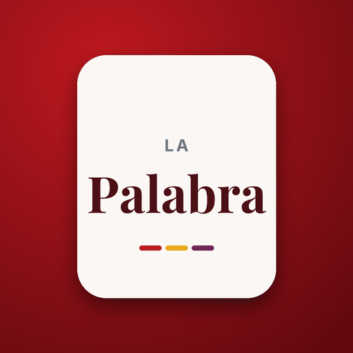

Last updated: November 21, 2026
In short: SpanishBuddy has no account, no server, and no backend. Everything you do in the app — your level, your saved words, your streak, your review schedule — is stored only in a local database on your own device. We (the developer) never receive it, see it, or store a copy of it anywhere.
SpanishBuddy ("we", "our", or "the app") is developed by Giacomo Matzeu as a solo developer based in Italy. This privacy policy explains what data the app creates on your device, what — if anything — ever leaves it, and why.
SpanishBuddy does not require sign-in and has no user accounts. There is no email address, password, or Google Sign-In involved in using the app. A short on-device "learner profile" (your CEFR level and native language) is created automatically the first time you open the app, tied only to a randomly generated install ID that SpanishBuddy creates itself and that never leaves your device. (This is separate from the identifier described in section 4.)
All app data lives in a local SQLite database and a small amount of local key-value storage on your phone (via expo-sqlite and MMKV). This includes:
None of this data is transmitted anywhere by default. There is no backend server for SpanishBuddy to send it to.
Listening to a word or sentence (text-to-speech). The speaker button next to a Spanish word or example sentence reads it aloud using the text-to-speech engine that is built into your Android device (through the expo-speech library). SpanishBuddy has no audio files of its own, does not record or use the microphone, and does not store or receive anything from this feature. Only the word or sentence you tapped (or, if you turn on the optional "read the sentence after answering" setting, the sentence of the exercise you just answered) is handed to your device's speech engine. Which engine is used, and whether it processes text on the device or online, is determined by your phone's settings and the engine's provider (for example Google or your phone manufacturer); if you use an engine that works online, that provider may receive that text under its own privacy policy. SpanishBuddy does not control or see this.
SpanishBuddy includes one optional, opt-in AI feature that generates extra examples and a short usage note for a word you've saved. It is off until you turn it on, and it works differently from a typical app AI feature:
Use of this feature is subject to the privacy policy of the provider you choose (for example Anthropic's or OpenAI's), since your device is communicating with that provider directly using your own key and your own account/usage limits.
If you enable reminders, SpanishBuddy schedules local notifications (for your daily word and spaced-repetition reviews) directly on your device using the operating system's notification scheduler. The reminder content never leaves your phone, and we never receive any identifier or notification content.
Google Firebase Cloud Messaging component. The notification library the app uses (Expo Notifications) includes Google's Firebase Cloud Messaging component. Because of it, Android may create a Firebase installation identifier for the app on your device and exchange it with Google. SpanishBuddy does not use this identifier, does not send push notifications, does not receive it, and uses it for no advertising, analytics or tracking. It is handled by Google under Google's privacy policy.
You can export a backup of your data as a single .json file from Settings. This is entirely user-initiated: the app hands the file to your device's normal share sheet, and it's up to you where you save it (e.g. Google Drive, Files, email to yourself). We never receive a copy of this file. By default your AI API key is not included in backup exports. If you have set one, the app asks when you export whether to include it; if you choose to, the file will contain your key and provider settings in plain text, so keep that file private. We never receive it. Restoring a backup replaces the data on your device only.
Optional automatic backup (Android). If you turn it on in Settings, the app also writes a backup copy to a folder you choose, shortly after your data changes, and keeps the 10 most recent copies. The app only writes files into that folder using Android's standard folder access; it does not connect to any server. Folders inside Google Drive are not supported for this feature; choose a folder in your phone's storage. If the folder you choose is kept in sync by another app (for example Dropbox), that app — not SpanishBuddy — uploads the files, under its own privacy policy. Automatic backups never contain your AI API key or provider settings. Files already written stay in your folder until you delete them.
Android's own backup. If device backup is enabled in your phone's settings, Android may copy the app's database and settings to your Google account as part of its own backup. We neither control nor receive it. The AI API key, notification identifiers and the automatic-backup folder setting are excluded from it.
Because the app has no backend, there are very few third parties involved, and none of them are processors of your app data in the traditional sense:
| Service | What it sees | When |
|---|---|---|
| The AI provider you choose (Anthropic, OpenAI or a compatible service) | A single word, CEFR level, and native language — nothing else | Only if you choose a provider, set your own API key and use "Explore Further" |
| The cloud app that syncs your backup folder, if any (e.g. Dropbox) | The backup files written to that folder (your learning data, never the AI key) | Only if you turn on automatic backup and choose a folder that app synchronises |
| Google (Firebase Cloud Messaging component of the notification library) | A Firebase installation identifier created and exchanged with Google by that component; we never receive it (see section 4) | Whenever the app is installed and Android runs that component |
| Your device's text-to-speech engine (e.g. Google, or your phone manufacturer's) | The Spanish word or sentence you tap the speaker button for (or that is read after an exercise answer if you enable that setting), to read it aloud; handled by the engine you have set on your phone, which may process it on the device or online. We never receive it | Only when you tap a speaker button, or after an answer if you turn on automatic reading |
| Google Play | Standard install/crash diagnostics collected by the Play Store platform itself | Always (governed by Google's own privacy policy, not ours) |
| Formspree | Your name/email and message, only if you submit the contact form on this support site | Only if you contact us — this is our support website, not the app |
We do not use Supabase, Railway, Upstash, or Sentry, and the app has no backend of its own. The only Firebase component present is the notification-library component described in section 4.
We do not sell, trade, or rent any information. There is no advertising or analytics SDK in the app, and we collect none of your data — your app data simply stays on your device. The only identifier that leaves the device is the Firebase installation identifier described in section 4, which is handled by Google and never reaches us.
Since your data lives only on your device, you are always in full control of it. See the Delete Your Data page for how to remove it — uninstalling the app, or clearing its storage from your phone's settings, permanently deletes everything immediately. There is nothing stored on a server for us to delete on your behalf.
SpanishBuddy is designed for adult learners aged 18 and above and is not directed at children. Since the app collects no personal information from anyone, there is no data from children under 13 for us to hold or delete.
We may update this privacy policy from time to time — for example, as new opt-in features are added. We will note material changes here with an updated "last updated" date. Continued use of the app after changes constitutes acceptance of the updated policy.
Giacomo Matzeu
SpanishBuddy App Developer
Contact us · Delete your data